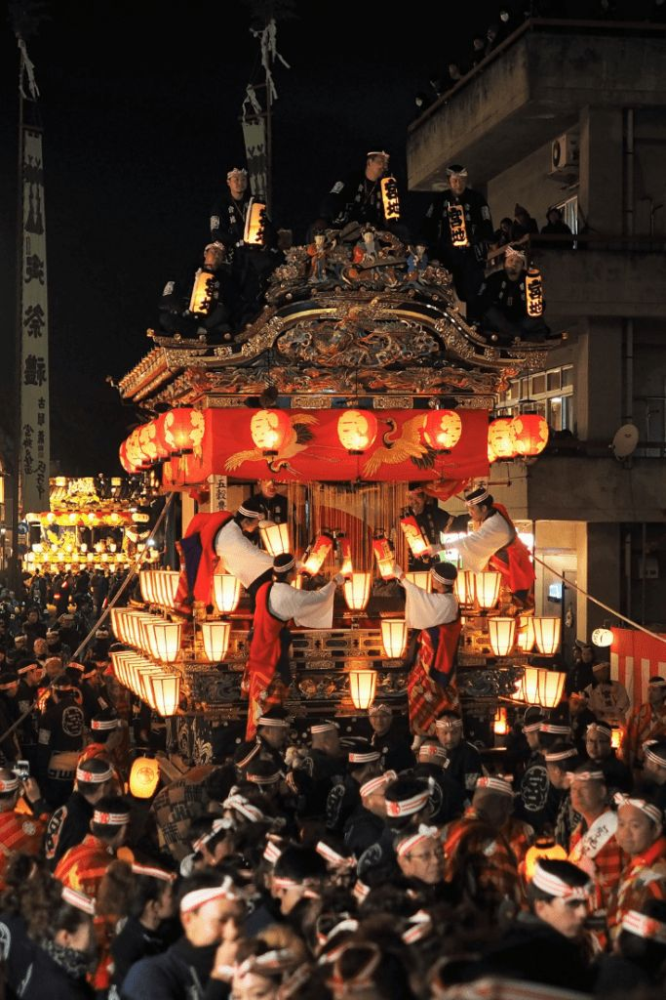
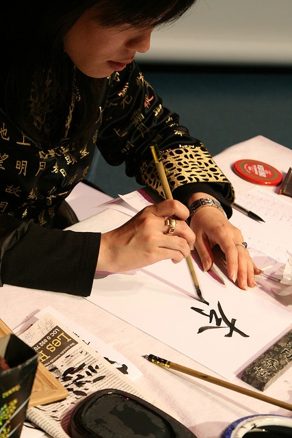

culture

Celebrating Japanese Festivals
Japan is renowned for its vibrant festivals, known as matsuri, which
celebrate various traditions and cultural events. Among the most iconic
is Hanami, the cherry blossom festival, where people gather under
blooming cherry trees to enjoy picnics and revel in the fleeting beauty
of the blossoms. The Gion Matsuri in Kyoto stands out as one of Japan's
oldest festivals, featuring grand processions of ornate floats known as
yamaboko, accompanied by traditional music and dance. In the summer,
Obon festivals honor ancestors with lively street parades, Bon Odori
dances, and lantern lightings. Takayama Festival in autumn showcases
elaborate floats against the backdrop of vibrant foliage. As the year
ends, Shogatsu welcomes the New Year with temple visits, prayers for
prosperity, and traditional foods. These festivals, steeped in tradition
and community spirit, offer a captivating glimpse into Japan's rich
cultural heritage and bring people together in joyous celebration
throughout the year.
During festivals in Japan, the atmosphere brims with excitement and
camaraderie as people from all walks of life come together to revel in
the festivities. Streets are adorned with colorful decorations, stalls
selling traditional foods, and lively performances fill the air with
music and dance. Families and friends gather to share in the joyous
occasion, creating cherished memories and strengthening bonds. At
Hanami, groups picnic beneath cherry blossoms, savoring seasonal
delicacies and engaging in friendly conversation amidst nature's
splendor. During Gion Matsuri, the streets pulse with energy as
spectators admire the majestic floats parading through ancient Kyoto
streets, accompanied by traditional music and cheers of the crowd. Obon
festivals bring communities together with spirited dances and
lantern-lit processions, honoring ancestors and celebrating life.
Whether admiring elaborate yatai floats at Takayama Festival or
welcoming the New Year with temple visits and festive foods during
Shogatsu, Japanese festivals are a time of unity, joy, and cultural
pride for all who participate.
_______________________________________________________________________________

Tea ceremony
Symbolism and Ritual: Explore the deep symbolism and ritualistic aspects
of the Japanese tea ceremony, including the significance of each
movement and gesture.
Zen Philosophy: Discuss how the tea ceremony embodies principles of Zen
Buddhism, such as mindfulness, presence, and harmony with nature.
Cultural Importance: Highlight the cultural significance of the tea
ceremony in Japanese society, including its role in social interactions,
artistic expression, and spiritual practice.
_______________________________________________________________________________
Japanese Calligraphy

Artistic Expression: Explore how Japanese calligraphy serves as a form
of artistic expression, with each brushstroke conveying meaning,
emotion, and aesthetic beauty.
Historical Evolution: Trace the historical evolution of Japanese
calligraphy from its roots in ancient China to its development as a
distinct art form in Japan, including the influence of different styles
and schools.
Contemporary Practice: Discuss the continued relevance of calligraphy in
contemporary Japan, both as a traditional art form and as a medium for
creative expression in modern society.
Aesthetic Enhancement: Incorporating Japanese calligraphy as decorations
in the home adds a touch of elegance, sophistication, and cultural
richness to the interior space, enhancing its overall aesthetic appeal.